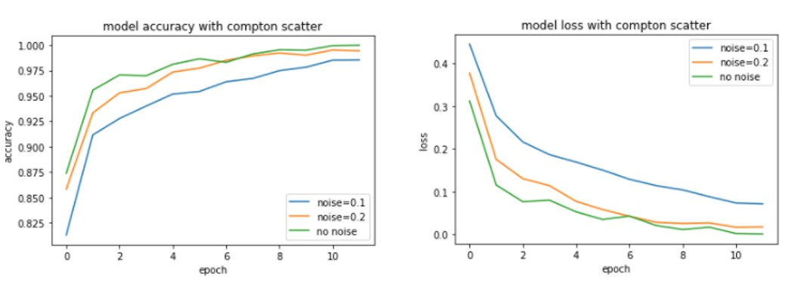
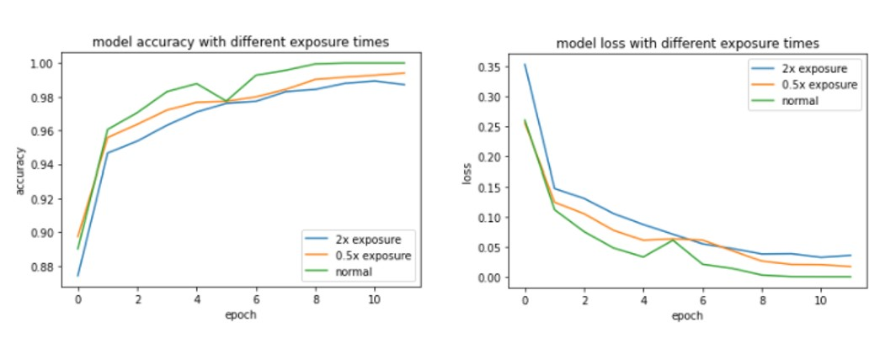
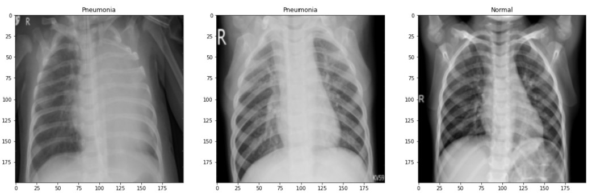

| Paper PDF |



|
Projection radiography is one of the most popular imaging modalities on the market as it is relatively cheap, widely available, and can be used for many different applications. Here I investigate two physical parameters of projection radiography, Compton scatter and exposure time, and apply the physical parameters in the augmentation of data to investigate their effects on the binary classification of chest x-rays for healthy individuals and patients with either bacterial or viral pneumonia. I find that the augmentation of the training and testing data has little effect on the accuracy of the models, and this lead to the further investigation of training these physical layers using a TensorFlow Eager model.
|
| Paper: |
| Code and Data: |